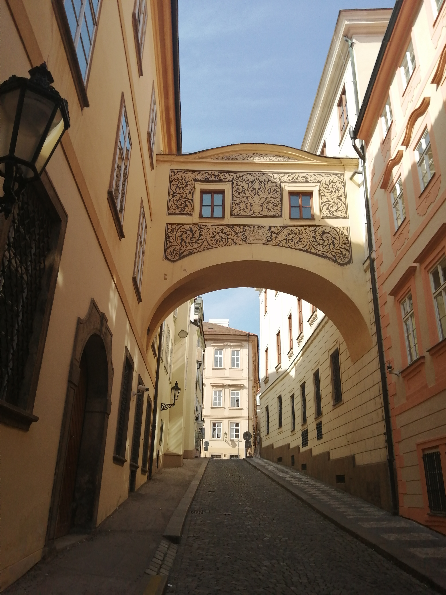

| Bemutatkozás | Szolgáltatások | Foglalás | Képek | Kapcsolat |
Balatonalmádi központjához közel kínálunk két 60 m2 alapterületű külön bejáratú, önálló konyhás és fürdőszobás első emeleti és tetőtéri apartmant. Az összes férőhelyek száma 10, ebből a tetőtérben 1-4 fő, az első szinten 1-6 fő számára tudunk elhelyezést biztosítani. A szobák légkondicionáltak. A kertben lehetőség van kiülésre. Apartmanonként egy ingyenes zárt területen elhelyezkedő autó-parkoló áll a vendégek rendelkezésére. Kerékpáros parkoló is biztosított. Rövid sétával elérhetők a strandok, üzletek, busz és vasúti pályaudvar, éttermek.
Foglalás lehetséges: 1. Foglalás Airbnb-n keresztül. Ekkor az Airbnb foglalási folyamatának minden előnyét kihasználhatja, illetve a szabad időpontokat és foglaltságokat megtekintheti itt az emeleti apartman és itt a tetőtéri apartman esestében vagy 2. Foglalás közvetlenül a megadott email címen (hikari.apartman@gmail.com) Bejelentkezés: 16:00 - 21:00 között, ettől eltérően előzetes egyeztetés szerint. Kérjük előre jelezze, hogy várhatóan mikor érkezik. Kijelentkezés: 10 óráig Fizetés: 1. Airbnb foglalás esetében automatikusan. 2. Közvetlen foglalás esetén a szállásdíj 50 százalékat foglalóként kérjük befizetni a megadott határidőig az alábbi számlaszámra: Joó Gábor 11600006–00000000–83403754. A foglalás a foglaló beérkezése után válik véglegessé, ezután lemondásra nincs lehetőség.A fennmaradó összeget az érkezés előtti napig átutalással vagy az érkezéskor készpénzben fizetheti a szállás elfoglalása előtt. A szállásdíj euróban is fizethető, ezt kérjük előre jelezni. Árakról és további részletekről érdeklődhet az elérhetőségeken

Elérhetőség: Cím: 8220 Balatonalmádi Dukai Takách Jenő u. 2/a. E-mail: hikari.apartman@gmail.com Telefonügyelet: +36-20-9652-000 (magyar nyelven) Árak és foglalás: +36-30-4336-812 (magyar, angol, német és spanyol nyelven) Emeleti apartman Tetőtéri apartman A szállástól mért távolságok: A városközpont, vasútállomás, buszpályaudvar, posta, Penny Market, éttermek gyalogosan 900 m, ALDI, Benzinkút 1500 m A Budatava Strand gyalog 500 méterre a Wesselényi Strand 1 kilométerre található Hajóállomás gyalog 400 m Balatoni kerékpár körút 300 m, ehhez csatlakozik a veszprémi kerékpárút Óvári Messzelátó gyalogosan 2 km, Csere-hegyi kilátó 6 km Veszprém 14 km Bobpálya 5 km Uszoda 5 km Néhány honlap: Balatonalmádi Almádi programok Almádi látnivalók